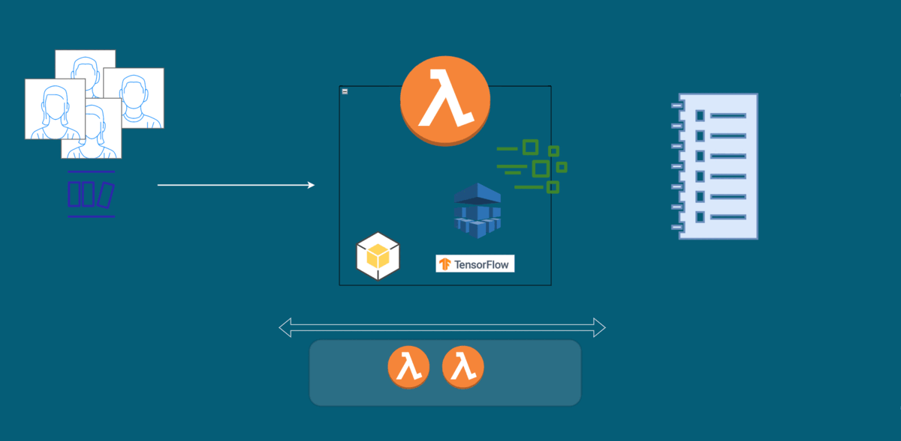

Serverless HPC FaaS for Machine Learning

Trains a neural network model to classify 1000 images and return object category:
Parallel Processing: enabled
Concurrent Executions: 5
Scaling: Horizontal
Deployment configurations
Memory: 3008 MB
Timeout: 10 minutes
Ephemeral Storage: 1024 MB
newchange
Worlkload Configuration
1000
Execute